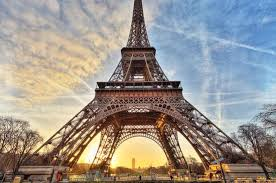
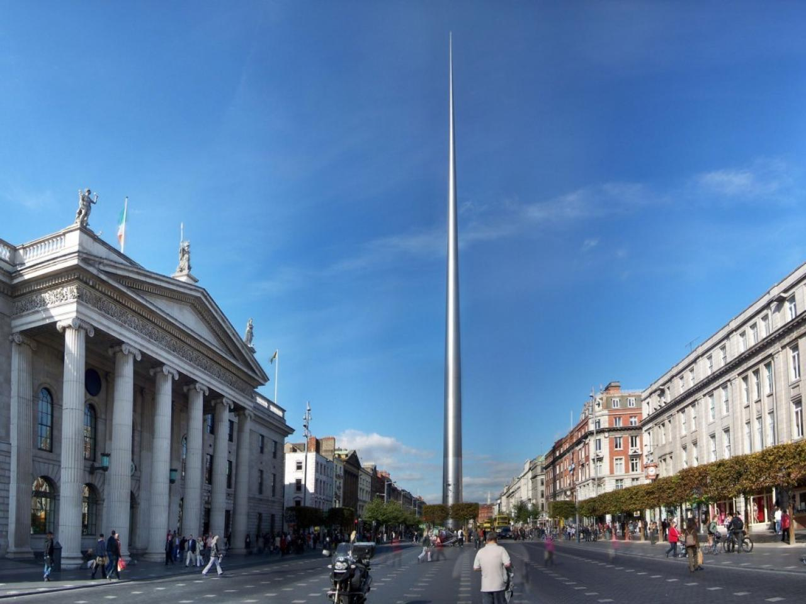
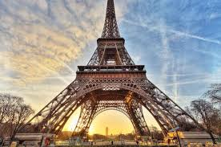
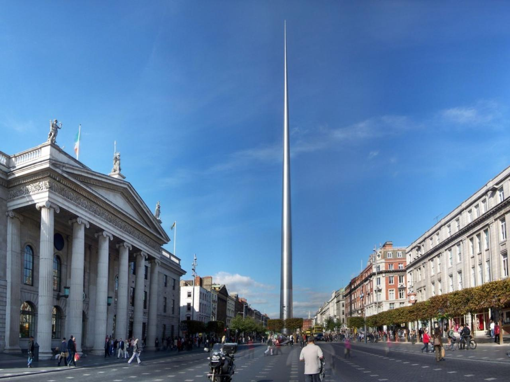

Rome was the first major European city I visited. The city of Rome spans 28 centuries making it one of the most historic cities in Europe. The founding of Rome dates back to around 753 BC. As a result there are ancient sites rich in history dotted around the city. My favourite of these was undoubtedly the colosseum. Its sheer size and level of preservation blew my mind. The building is is nearly two thousand years old and still stands in all its glory. Due to Romes warm climate and incredible historic background it remains my favourite travel destination.
For my transition year school tour we visited Paris. It is the worlds most visited city. The city is proud of it's many iconic monuments such as the Eiffel Tower,Norte-Dame and Arc de Triomphe. Disney Land Paris in my opinion is another great asset to the city. We spent two of the four lands messing around on some of Europe's biggest and quickest rollercoasters. Paris is also famous for its cuisine and would claim to have some of the best restaurants in the world. Undoubtedly its a city i would love to visit again or possibly live in the near future.
Dublin is often the most forgotten and underrated city in Europe by Irish people. On our 6th class school tour we spent the day in Dublin. We visited various iconic spots around the city such as St James Gate St Patrick's Cathedral and Dublin castle. There was also a lovely bus tour around the city. Last year i got to experience the vibrant night life Dublin has to offer. The city boasts some spectacular clubs and bars such as District 8 and Temple bar. Over all Dublin is and all rounded city with lots to off and is only located in our back garden.